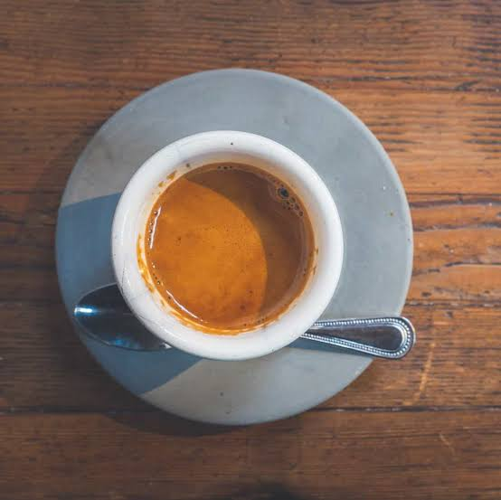
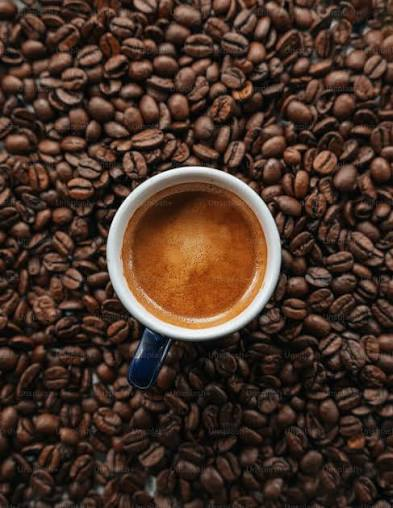
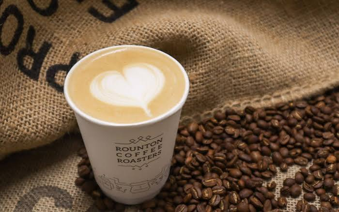

O melhor café artesanal da cidade
Desfrute de momentos aconchegantes com grãos selecionados, métodos de extração exclusivos e acompanhamentos fresquinhos todos os dias.
Telefone / WhatsApp: (31) 940028922
Serviços Oferecidos

Cafés Especiais
Espresso, Cappuniccino e métodos coados na sua frente.

Grãos Selecionados
Compre pacotes de grãos moídos na hora para levar para casa.
Confeitaria
Bolos caseiros, torta finas e pães de queijo recheados.

Espaço Coworking
Wi-Fi de alta velocidade e tomadas para estudar ou trablhar.
Cuidados Importantes
Dicas para Apreciar um Bom Café
1. Temperatura da água:A água ideal para extração do café coado deve estar entre 90 c° e 96 c°, nunca fervendo.
2. Armazenamento: Guarde os grãos em recipientes herméticos, longe da luz e da umidade, para preservar o aroma.
3. Moagem correta:Moa os grãos apenas na hora do preparo para garantir nota sensoriais mais intensas e frescas.
4. Proporção ideal:Utilize em média 10g de café para cada 100ml de água para um equilíbro perfeito de sabor.
5. Água filtrada:Utilze sempre água filtrada ou mineral para evitar interferências no sabor final da bebida.
6. Degustação pura:Experimente o primeiro gole de chocolate e caramelo do grão.